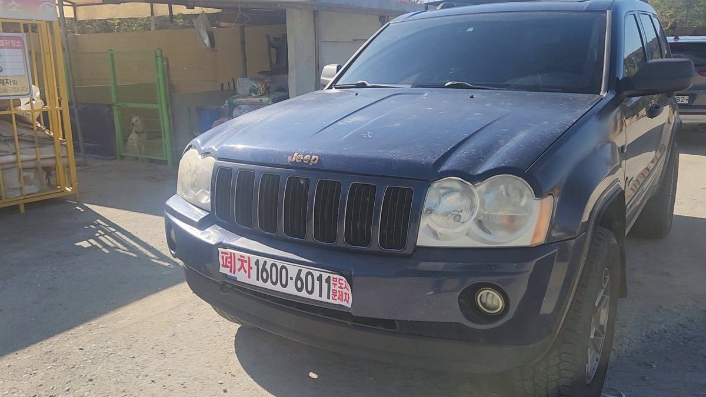
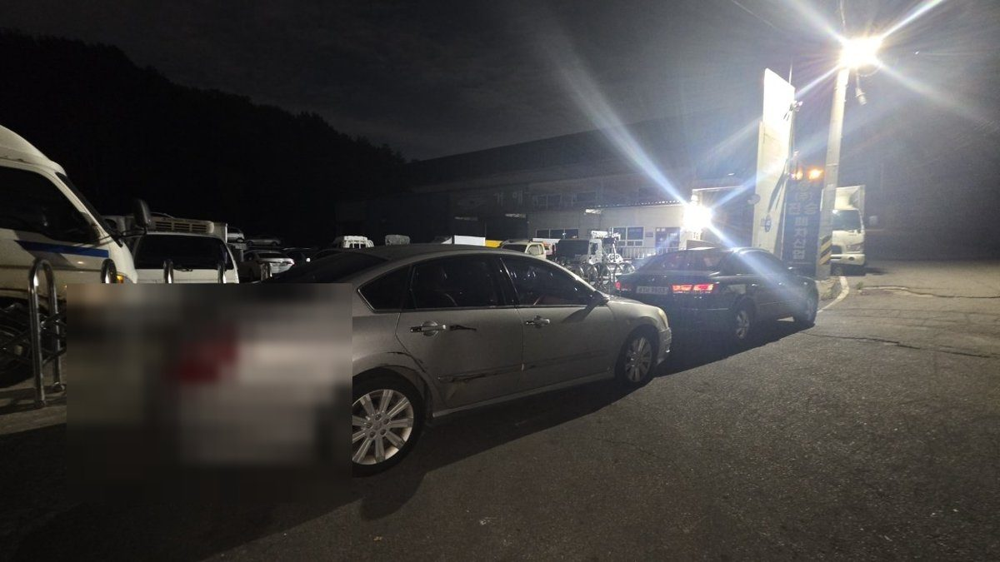
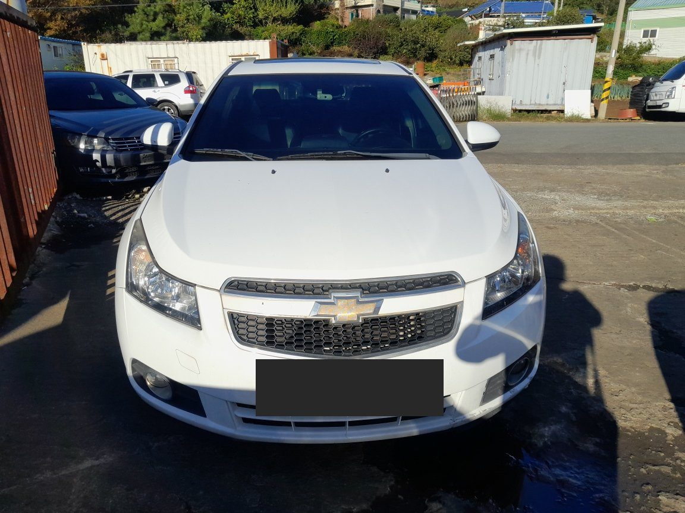

폐차 사전 7편 — 고쳐 탈까 폐차할까 (조각 37~42번)
한 줄로 답하면
수리비와 지금 차값(폐차값·수출값)을 같은 날 같이 놓고 보면 정할 수 있습니다. 수리비가 차값보다 훨씬 작으면 고쳐 타는 쪽이, 차값에 가깝거나 넘으면 지금 정리하는 쪽이 손해가 적은 경우가 많기 때문입니다.
정든 차라 고쳐서 더 타고 싶은 게 먼저입니다. 고칠 수 있는 차를 버리는 것 같아 아깝기도 합니다. 그 마음이 맞는 차도 많습니다. 다만 수리비가 차값과 비슷해지는 순간부터는 계산이 달라집니다.
알아 두면 좋은 조건과 절차
규칙은 숨기지 않고 다 적었습니다. 내 차가 어느 쪽인지는 원부와 차 상태를 합쳐 봐야 나옵니다
- 사전 37번수리비와 차값을 같은 날 견줘 보세요수리 견적은 '얼마 들까'만 알려 주고, 고친 뒤 그 차가 얼마인지는 알려 주지 않습니다. 같은 날 지금 차값(지금 넘기면 받는 돈: 폐차 쪽·수출 쪽)을 같이 놓고 봐야 손해가 적은 쪽이 보입니다.
- 사전 38번오래 탄 차는 수리가 한 번으로 끝나지 않는 경우가 많습니다한 부품을 갈고 나면 다른 부품 차례가 오는 경우가 많습니다. 이번 수리가 마지막인지, 곧 손볼 데가 더 있는지 정비소에 꼭 물어보세요.
- 사전 39번고쳐 탈 동안 나가는 돈도 같이 보세요자동차세·보험·정기검사는 차를 탈 동안 계속 나갑니다. 검사 날짜가 가깝거나 보험 갱신이 곧이면 그 돈까지 합쳐서 견줍니다.
- 사전 40번고쳐 타는 게 나은 경우수리비가 차값보다 훨씬 작고, 다른 곳은 멀쩡하고, 앞으로 몇 년 더 탈 계획이면 고쳐 타는 쪽이 맞습니다. 이럴 때는 그렇게 말씀드립니다.
- 사전 41번지금 정리하는 게 나은 경우수리비가 차값에 가깝거나 넘고, 검사·보험 갱신이 곧이고, 다른 곳도 손볼 데가 보이면 지금 정리하는 쪽이 손해가 적은 경우가 많습니다.
- 사전 42번폐차만 있는 게 아닙니다연식·차종·상태에 따라 폐차보다 수출이 더 받는 차가 있습니다. 고장 난 상태 그대로도 수출 쪽을 같이 알아봅니다.
내 차는 어디로?
수리 견적서 사진과 차 앞·옆·계기판 사진을 문자로 보내 주세요. 견적서는 금액이 보이는 부분만 찍으셔도 되고, 어느 정비소 것이어도 됩니다. 폐차값·수출값을 같이 알아보고, 고쳐 타는 게 나으면 그렇게 말씀드립니다.
폐차값과 수출값, 둘 다 알려드려요
수리 견적 나오면 견적서 사진만 문자로 보내 주세요. 차값이랑 같이 견줘 드릴게요. 답만 받고 안 하셔도 됩니다.
손님이 자주 걱정하는 것
실제 상담 전화에서 자주 듣는 걱정과 답입니다
- 견적서만 보내면 계속 연락 오나아니요, 보내 주신 견적서로 한 번 견줘서 알려 드리고 끝입니다. 광고 문자는 보내지 않고, 정하시는 건 손님입니다.
- 견인비를 따로 물지 않을까시동이 안 걸리거나 키가 없어도 견인차가 갑니다. 견인비는 따로 없어요. 먼 거리나 시동 안 걸리는 차도 견인차가 직접 갑니다.
- 돈을 못 받으면 어쩌나차량 확인하면 먼저 입금하고, 그 다음에 차를 가져갑니다. 압류나 저당이 있어도 이 순서는 같습니다.
같은 상황의 실제 사례
지역은 카드마다 표시됩니다
의왕시 2014년식 뉴SM3 폐차·수출 비교 상담 사례
수리비가 많이 나오는 차라 최대한 빨리 정리하고 싶어요

이월면 지프 그랜드체로키 폐차·수출 비교 상담 사례
캠핑용으로 아끼던 차라 고쳐서 더 타려 했는데, 매연이 많아 검사를 계속 통과하지 못함.

성남시 분당구 2008년식 SM7 뉴아트 폐차·수출 비교 상담 사례
냉각수 쪽이 고장 나 고쳐야 할지 고민이었고, 낮에는 시간이 안 돼 저녁 7시 넘어서 와 줄 수 있는지 물으셨어요

봉동읍 2010년식 라세티 프리미어 폐차·수출 비교 상담 사례
라디에이터가 터져서 수리비가 많이 나온다는데, 고쳐야 하나요?
자주 묻는 질문
이 주제로 많이 물어보시는 것들입니다
수리비가 차값보다 많이 나왔어요. 폐차가 나아요?
네, 수리비가 차값을 넘으면 고쳐도 그 돈을 돌려받기 어려워 지금 정리하는 쪽이 나은 경우가 많습니다. 폐차 쪽과 수출 쪽 값을 같이 보고 말씀드립니다.
정비소에 맡겨 둔 차도 거기서 가져가요?
네, 정비소에 있는 차도 견인차가 그 자리로 가서 가져옵니다. 정비소 위치와 연락할 분만 알려 주시면 되고, 견인비는 따로 없어요.
고쳐 타는 게 나은 차면 그렇게 말해 주나요?
네, 고쳐 타는 게 나은 차는 그렇게 말씀드립니다 — 굳이 폐차하자고 하지 않습니다. 수리비와 차값을 같이 놓고 본 대로 말씀드리고, 정하시는 건 손님입니다.
상담 안내
폐차 전에 수출과 비교해서 유리한 쪽으로
차 상태와 차가 있는 곳을 알려주시면 폐차와 수출 중 유리한 쪽을 통화 때 바로 말씀드립니다. 금액은 상담 후 확인해 드립니다. 전국 어디든 기사가 차 있는 자리로 갑니다. 전화 1600-6011 / 문자 010-9926-7779.
최근 문의 지역
최근 문의가 온 곳과 상담이 많은 시·군입니다. 차가 있는 곳의 페이지에서 동별 안내를 보실 수 있습니다